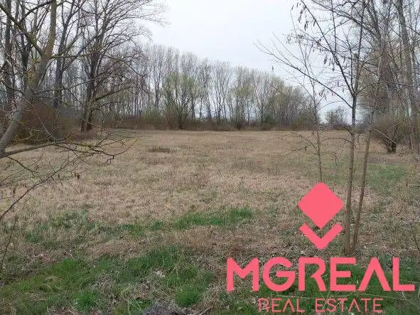
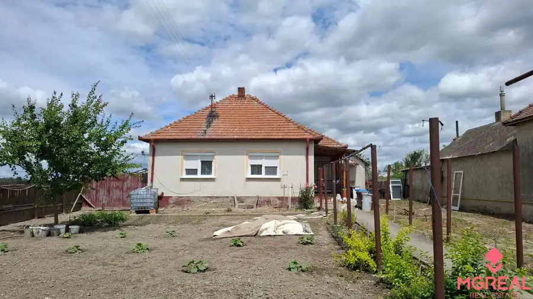
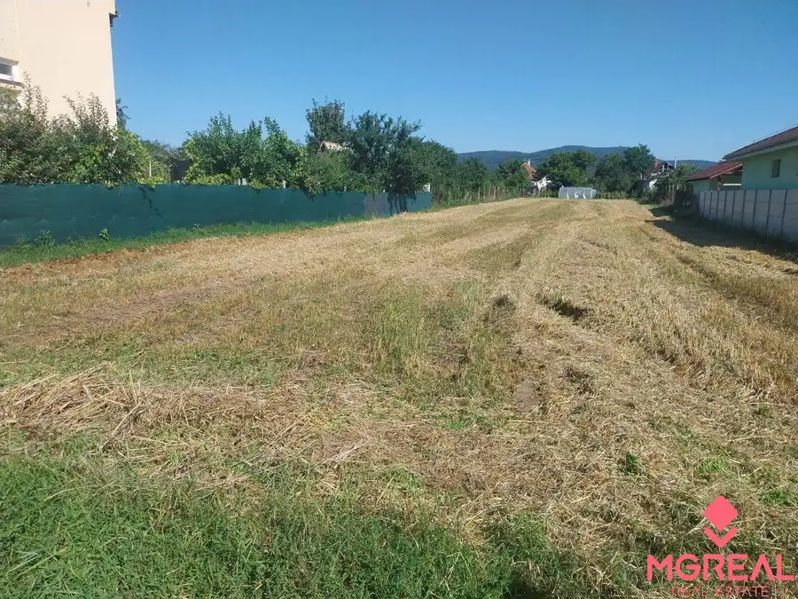
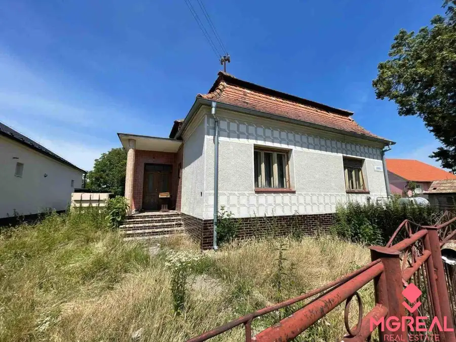
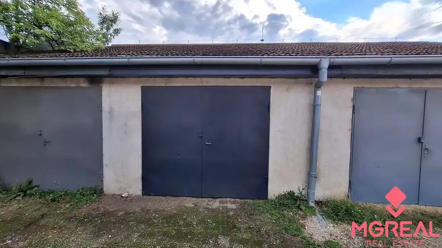
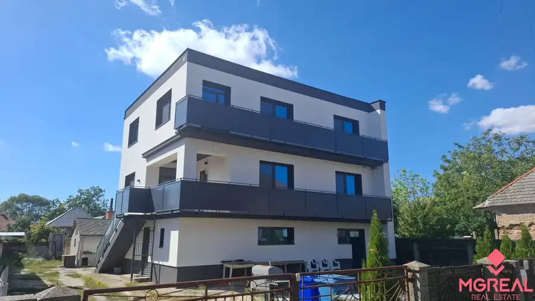
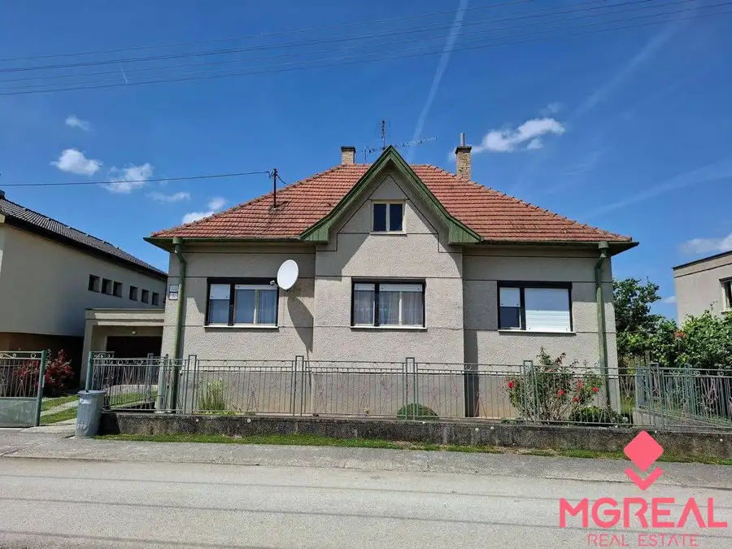
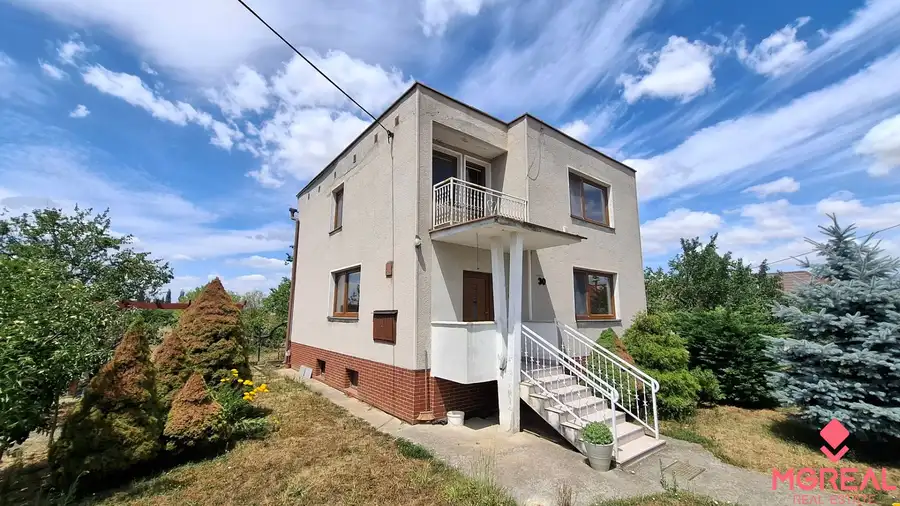

Aktuálna ponuka
Nehnuteľnosti, ktoré ponúkam
8 nehnuteľností na predaj a prenájom. Vyberte typ, alebo napíšte lokalitu.
8 z 8 ponúk

Pozemok6 Cena dohodouRovinatý pozemok 17.000 m2 V. Kosihy (Komárno) Veľké Kosihy 17000 m² Ponúkame Vám na predaj rovinatý pozemok, ktorý sa nachádza v katastri obce Veľké Kosihy, okres Komárno. Pozemok má rozlohu viac ako 17.000 m2.…
Rodinné domy10 Cena dohodouRodinný dom Trávnik za 43.000, Trávnik 3-izbový100 m² Ponúkame Vám na predaj zachovalý rodinný dom v obci Trávnik, okres Komárno. Ide o rodinný dom postavený z tehál, kolaudovaný v roku 1970. Dom má 1…
Záhrady3 76 200 €Veľký pozemok pre výstavbu RD Čakajovce (Nitra) Čakajovce 896 m² Ponúkame Vám na predaj pozemok, ktorý sa nachádza v obci Čakajovce pri Nitre. Do centra NR 7 min. autom. Veľmi dobré napojenie, bez frekventovanej…
Rodinné domy3 68 500 €RD Okoličná n./Ostrove (okres KN) - 68.500 Euro!!! Okoličná na Ostrove 148 m² Ponúkame Vám na predaj starší rodinný dom v obci Okoličná na Ostrove, okres Komárno. Dom je síce v pôvodnom stave, ale s dobrým dispozičným riešením.…
Ostatné3 16 000 €Garáž Pod šipkom za 16.000,- alebo na prenájom!!! Partizánske 21 m² Ide o väčšiu garáž s rozlohou 21 m2. Postavená je z tehál, strecha škrídla, vstupná brána na klasické otváranie. Elektrika je aktuálne odpojená.…
Rodinné domy10 249 000 €Veľký RD v obci Veľké Kosihy okres Komárno Veľké Kosihy 280 m² Dom bol postavený v roku 1976 /murovaný - siporex/ a v roku 2024 prešiel kompletnou rekonštrukciou! (vymenené plastové okná, vstupné dvere,…
Rodinné domy8 123 900 €4 izb. RD v Chynoranoch, okres Partizánske - ZNÍŽENÁ CENA! Chynorany 4-izbový110 m² Iba u nás Vám ponúkame na predaj 4-izbový rodinný dom, ktorý sa nachádza v obci Chynorany, okres Partizánske. Dom je síce v pôvodnom, ale zachovalom…
Rodinné domy10 253 000 €4. izb. RD Čakajovce pri Nitre Čakajovce 4-izbový140 m² Dispozične dom pozostáva z 2. nadzemných podlaží, každé s rozlohou 70 m2. Na prízemí sa nachádza vstupná chodba, veľká obývacia izba prepojená s…Tomuto výberu zatiaľ nezodpovedá žiadna ponuka. Napíšte mi, čo hľadáte.